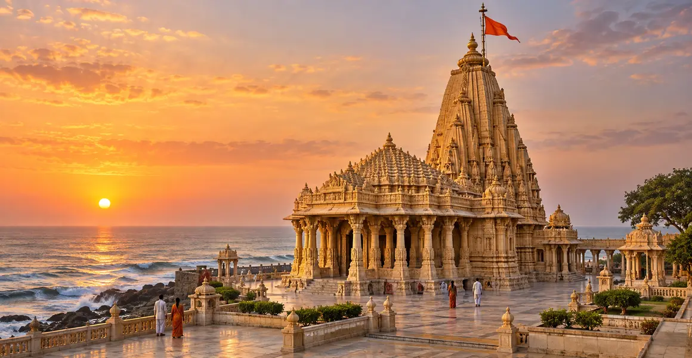

सोमनाथ ज्योतिर्लिंग
प्रभास पाटन, गिर सोमनाथ, गुजरात में स्थित सोमनाथ ज्योतिर्लिंग की पवित्र कथा, इतिहास, स्थापत्य, पूजा, उत्तरदायी यात्रा और आंतरिक शिक्षा की विस्तृत मार्गदर्शिका।
एक दृष्टि में
स्थान
प्रभास पाटन, गिर सोमनाथ, गुजरात
पवित्र स्वरूप
सोमनाथ ज्योतिर्लिंग
मार्गदर्शिका
कथा, इतिहास, पूजा और तीर्थयात्रा
इस मार्गदर्शिका के प्रमुख विषय
पवित्र स्वरूप और नाम का अर्थ
सोमनाथ का अर्थ है—“सोम अर्थात् चन्द्रमा के नाथ।” यह नाम भगवान शिव और चन्द्रदेव के पवित्र सम्बन्ध को व्यक्त करता है। यह मंदिर गुजरात के सौराष्ट्र तट पर प्रभास पाटन में स्थित है, जहाँ समुद्र, विस्तृत क्षितिज और उपासना मिलकर एक अद्भुत तीर्थभूमि बनाते हैं। पारंपरिक द्वादश ज्योतिर्लिंग क्रम में सोमनाथ का स्मरण प्रथम स्थान पर होता है। यहाँ “प्रथम” उसकी विशिष्ट प्रतिष्ठा का संकेत है; इससे अन्य ग्यारह ज्योतिर्लिंगों की महिमा कम नहीं होती।
चन्द्रदेव और दक्ष की पवित्र कथा
पवित्र परंपरा के अनुसार चन्द्रदेव ने दक्ष की सत्ताईस पुत्रियों से विवाह किया, जिन्हें सत्ताईस नक्षत्रों से जोड़ा जाता है। किंतु रोहिणी के प्रति विशेष अनुराग के कारण अन्य पत्नियाँ उपेक्षित अनुभव करने लगीं और उन्होंने दक्ष से शिकायत की। दक्ष ने चन्द्र को अपना तेज खोने का शाप दिया। चन्द्रमा के क्षीण होने से संसार का संतुलन प्रभावित हुआ। तब चन्द्रदेव ने प्रभास क्षेत्र में कठोर तप और शिव-आराधना की। भगवान शिव ने शाप का संतुलित समाधान करते हुए चन्द्रमा के घटने-बढ़ने का क्रम स्थापित किया। यह कथा पुनरुत्थान, अनुशासन, समय और करुणामयी कृपा का संदेश देती है।
प्रभास: एक पवित्र तीर्थभूमि
सोमनाथ व्यापक प्रभास तीर्थक्षेत्र का भाग है, जिसका हिन्दू पवित्र भूगोल में बहुस्तरीय महत्व है। यह क्षेत्र पवित्र जलधाराओं के संगम, अरब सागर के तट और भगवान श्रीकृष्ण की अंतिम पार्थिव लीला से जुड़ी परंपराओं के लिए स्मरण किया जाता है। इसलिए यहाँ की यात्रा केवल एक भवन के दर्शन तक सीमित नहीं रहती; सम्पूर्ण तीर्थभूमि अनित्यता, विनम्रता और ईश्वर-स्मरण की प्रेरणा देती है। भक्त मंदिर-दर्शन के साथ समुद्रतट पर शांत चिंतन और आसपास के पवित्र स्थानों की यात्रा भी कर सकते हैं।
इतिहास, विघटन और पुनर्निर्माण
सोमनाथ मंदिर सदियों के दौरान अनेक बार क्षतिग्रस्त हुआ, पुनर्निर्मित हुआ और फिर प्रतिष्ठित हुआ। इसके इतिहास को अतिरंजित कथनों के स्थान पर विश्वसनीय अभिलेखों के आधार पर समझना चाहिए। वर्तमान मंदिर स्वतंत्रता के बाद आरम्भ हुए पुनर्निर्माण अभियान का परिणाम है, जिसे राष्ट्रीय नेतृत्व की प्रेरणा और श्री सोमनाथ ट्रस्ट के प्रयासों से आगे बढ़ाया गया। भक्तों के लिए इसका बार-बार पुनर्निर्माण उस आस्था का प्रतीक है जो आक्रमण, विनाश और क्षति के बाद भी जीवित रहती है। ऐतिहासिक दृष्टि से यह पश्चिमी भारत में बदलती राजनीतिक शक्तियों, संरक्षण और स्थापत्य-पुनरुत्थान को भी दर्शाता है।
स्थापत्य और समुद्री क्षितिज
वर्तमान पाषाण मंदिर पश्चिम भारतीय मंदिर-परंपरा की शैली में निर्मित है। इसका ऊँचा शिखर, मंडप और ज्योतिर्लिंग-केंद्रित गर्भगृह प्रमुख विशेषताएँ हैं। समुद्र के निकट होने से मंदिर परिसर को विशिष्ट दृश्यात्मक गरिमा मिलती है। मंदिर से दक्षिण दिशा में समुद्र की ओर जाती निर्बाध क्षितिज-रेखा भी प्रसिद्ध है। वास्तुकला को केवल स्मारक की तरह नहीं, बल्कि उपासना के माध्यम की तरह अनुभव करना चाहिए—बाहरी प्रांगण से गर्भगृह की ओर बढ़ना मन और दृष्टि को धीरे-धीरे शिव पर एकाग्र करता है।
दर्शन, पूजा और उत्सव
मंदिर की परंपरा के अनुसार प्रतिदिन दर्शन, आरती और विविध उपासना सम्पन्न होती हैं। महाशिवरात्रि तथा श्रावण मास में विशेष भीड़ रहती है और सोमवार शिव-आराधना के लिए प्रिय माना जाता है। सुरक्षा, साथ ले जाने योग्य वस्तुओं, फोटोग्राफी और दर्शन-पंक्ति के विषय में श्री सोमनाथ ट्रस्ट के वर्तमान नियमों का पालन करना चाहिए। किसी भी अर्पण की आध्यात्मिक सार्थकता श्रद्धा, स्वच्छता और संयम में है; तीर्थयात्रा को केवल किसी विशेष अनुष्ठान या सुविधाजनक दर्शन तक सीमित नहीं करना चाहिए।
उत्तरदायी तीर्थयात्रा की योजना
सोमनाथ सड़क और रेल द्वारा वेरावल–प्रभास पाटन क्षेत्र से सुगमता से पहुँचा जा सकता है। हवाई अड्डों तथा आगे की यातायात-व्यवस्था में परिवर्तन हो सकता है, इसलिए यात्रा से पहले पुष्टि करना आवश्यक है। समुद्री जलवायु गर्म और आर्द्र हो सकती है तथा प्रमुख पर्वों पर अत्यधिक भीड़ रहती है। पहचान-पत्र रखें, सुरक्षा नियमों का पालन करें, मर्यादित वस्त्र पहनें और पर्याप्त समय लेकर आएँ। प्रस्थान से पहले ट्रस्ट द्वारा प्रकाशित वर्तमान समय अवश्य जाँचें। इस पृष्ठ की यात्रा-सूचना सितंबर 2026 में जाँची गई है; ट्रस्ट की नवीनतम सूचना ही अंतिम मानी जाए।
सोमनाथ की आंतरिक शिक्षा
चन्द्रमा प्रतिरात्रि बदलता है, फिर भी पुनः पूर्णता प्राप्त करता है। इसलिए सोमनाथ मानव जीवन के लिए करुणामय प्रतीक प्रस्तुत करता है—क्षय अंतिम नहीं है, किंतु पुनरुत्थान के लिए विनम्रता और अनुशासन आवश्यक हैं। चन्द्र की कथा पक्षपात का समर्थन नहीं करती; वह उसके परिणाम और सुधार की संभावना दिखाती है। तीर्थयात्री यहाँ से यह संकल्प लेकर लौट सकता है कि संबंधों में न्याय रखेगा, अपना उत्तरदायित्व स्वीकार करेगा, नियमित साधना करेगा और बदलती परिस्थितियों के बीच शिव की अपरिवर्तनशील उपस्थिति का स्मरण करेगा।
महत्वपूर्ण यात्रा-सूचना
दर्शन-समय, बुकिंग, परिवहन, मौसम-संबंधी प्रतिबंध और मंदिर-नियम बदल सकते हैं। यात्रा से ठीक पहले आधिकारिक मंदिर या सरकारी पोर्टल पर सभी व्यावहारिक जानकारी जाँचें। पवित्र कथाएँ सम्मानित परंपरा के रूप में प्रस्तुत हैं और ऐतिहासिक विवरण उनसे अलग रखे गए हैं।
अक्सर पूछे जाने वाले प्रश्न
सोमनाथ को प्रथम ज्योतिर्लिंग क्यों कहा जाता है?
पारंपरिक स्तोत्र और सूची में इसका नाम सबसे पहले आता है; यह सम्मानित क्रम है, अन्य ज्योतिर्लिंगों को कम मानने का दावा नहीं।
सोमनाथ कहाँ स्थित है?
यह गुजरात के गिर सोमनाथ जिले में समुद्रतट पर प्रभास पाटन में स्थित है।
मुख्य पवित्र कथा क्या है?
दक्ष के शाप के बाद चन्द्रदेव शिव की आराधना करते हैं और शिव-कृपा से चन्द्रमा के घटने-बढ़ने का क्रम स्थापित होता है।
क्या यात्रा से पहले समय की पुष्टि करनी चाहिए?
हाँ। समय, सुरक्षा और पर्व-व्यवस्था बदल सकती है; प्रस्थान से पहले श्री सोमनाथ ट्रस्ट की नवीनतम सूचना देखें।